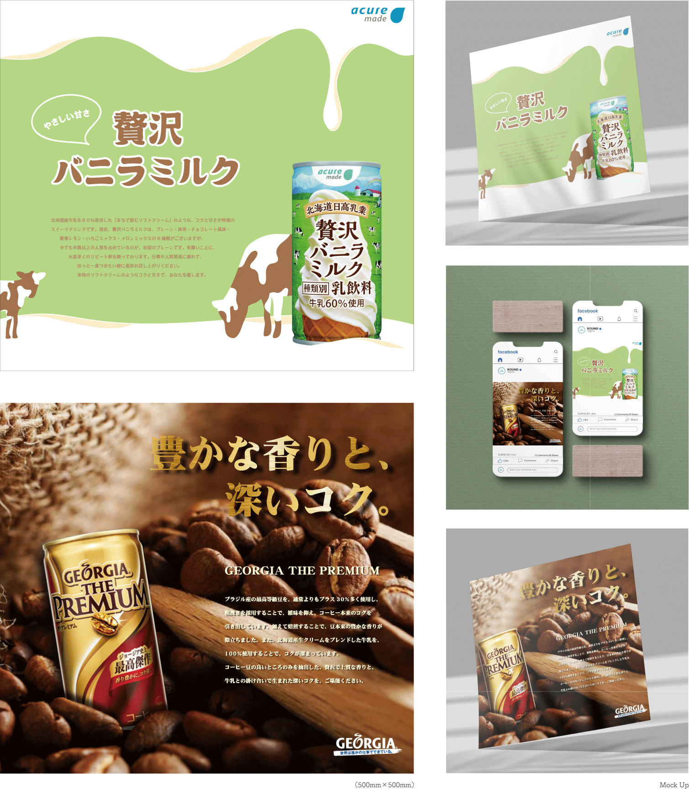

Graphic Design

Theme
自身で考えた架空のテーマを基にブランドを立案し、想定するイメージを最大限ビジュアル化する課題である。
幅広い意味を持つブランドデザインの主たる構成要素であり、特にデザイナーの制作がメインとなる
「ビジュアル・アイデンティティ」について取り組み、ブランディングする上でのデザイナーの役割を理解することを目的としている。
Concept
「まめだい」という名の「豆大福で有名な餅屋」をテーマにブランディングした。大福に始まり、ぜんざい、煎餅、団子といった餅や豆に関連する商品を、幅広く取り扱うことを想定している。
ターゲットの年齢や性別は問わず、誰もが気軽に立ち寄れる身近な餅屋である。
ロゴマークに餅を描き、小豆色に近いDIC500sを用いることと、節々に入子菱（いりこびし）柄を取り入れることで和を想起させ、視認的なわかりやすさを求めた。
親しみの持てるデザインであるよう、ロゴの丸みや配色の柔らかさを特に意識してデザインした。
スローガンの「心と体の温まる空間提供」を基に、可愛さもありつつ、老舗のような安心感も得られる印象を目指して制作した。
35h
2021/4-5
Theme
10-30代の女性をターゲットに、新鮮かつユニークなテイストで、PIPI(ピピ)という名のチョコレート菓子を発案するというテーマに沿い、「パッケージ・ポスター・POP」の3点を制作する。
実際に作れる味かは別として、あくまで人が口にするものという点から離れないことを条件に、斬新さを追求することがこの課題の目標である。

Concept
味だけでなく食感も楽しめる斬新なフレーバーを求め、いちご大福に着想した。いちご風味のチョコレートを求肥で包むことで、いちご大福に近い風味と食感が楽しめるチョコレート菓子となっている。
クッキーとチョコレートと求肥からなる珍しい組み合わせで興味を引き、購買意欲を湧かせる狙いだ。また実際に製作する際には、チョコレートと求肥の間に餡子を挟む案も加えたい。
パッケージは、眩しいほどの鮮やかな赤色を背景に、白色で強弱の強い文字を添えることで、苺の甘酸っぱさと求肥感を伝え、いちご大福が想起できるデザインとなるよう工夫した。
ポスターは、右下のパッケージを実際に組み立てて盛り込み制作した。こちらもメインは赤色であるがパッケージとの差を生むため、茶色がかった落ち着きのある赤色をベースに配色した。
POPはいちご型にし、ターゲット層からの支持が得られるよう可愛らしさを意識した。本物のいちご大福には賞味期限があるため、より柔軟な対応期間を設けられるよう、特典にはいちご狩りを採用した。
38h
2020/10-11
Theme
自由に化粧品ブランドを1つ、またその中から商品を1つ取り上げ、日本人向けに広告化する課題だ。
短期大学1年の中頃、他に4つの課題を終えIllustratorやPhotoshopに、少々親しみを持て始めた頃の作品である。
Concept
韓国初のメイクアップブランドである「CLIO」をテーマに制作した。CLIOは当時、綺麗なツヤ肌をナチュラルに作れる、というのが魅力の
クッションファンデーションシリーズ「KILL COVER」で名を馳せていた。CLIOの生まれである、韓国に似合う顔立ちと肌の美しさから、この女性の画像を起用し制作を進めた。
実際のKILL COVERの広告は、かなりスタイリッシュで綺麗めなものが多いため、あえて真逆に作り進め、斬新さを引き出すことを目指した。
クッションファンデーションに対しての「厚塗り感」を抱きにくくする目的を考慮し、ふわふわとしたデザインにすることで、比較的ナチュラル思考な日本人の目に止まらせることを意識して制作した。
18h
2020/9-10
Theme
近々、桐生大学付近に新たに設立される小学校の校章デザインの依頼が、桐生大学短期大学部デザイン学科の学生へ向けて届いた。
漢字で「笠西小」の3文字を入れること、新鮮さもありつつ親しみも感じられるデザインであることが条件である。

Concept
モチーフは菊の花である。16つの菊の花弁を学習内容の土台である基礎に見立て、その土台を崩すことなく次のステージへ向かって飛び立てるように、という願いを込めて羽を付けた。
また学習面に収まらず、友達や先生方を通して道徳を学ぶことで、笠西小が愛で溢れることを願い、全面に丸さと柔らかさを強調した。
小学生に好感を抱いてもらえるような可愛らしさ溢れるデザインであるとともに、基盤も着実に備えられるようにという意味も込めて制作した。
Concept
モチーフはハーバリウムである。笠西小という水に包まれて「いつまでもみずみずしく、清らかな心で歩み続けられるように」という願いを込めてデザインした。
笠西小が学内外を問わず、多くの大人達から見守られ包まれている、暖かさ溢れる学校であることが生徒へ伝わるよう、学校名を菊の花でそっと包み込んだ。
菊の花が内から外へ向かって色濃く染まっていくのは、基礎から応用への流れをイメージしたもので、一歩一歩着実に学び続けるけることで中身の濃い人間になれるように、という意味を含めている。
それぞれ15h
2020/10-11
Theme
ジャンルやブランドを問わず、既存の飲料商品を広告展開する課題。選んだモチーフの表現コンセプトを導き出し、新聞等の広告媒体に掲載することを想定して制作する。
Concept
acureから贅沢バニラミルクを、GEORGIAからブラックコーヒーを取り上げ制作した。1点目の贅沢バニラミルクは当時頻繁に購入していたため、1番身近な飲料であり魅力を伝えやすいと考えた。
この商品は、ソフトクリームをそのまま飲んでいるかのようなコクと甘さが最大の特徴であるため、牛を添え白色とクリーム色を使った波模様を缶へ伝うように描くことで、ミルク感を引き出すことを意識した。
2点目は1点目と対照的なブラックコーヒーを選んだ。GEORGIAらしい芳醇さを伝えるため、アップにしたコーヒー豆の中に商品を埋める配置をとった。商品に揃えキャッチコピーを金色にすることで、特別感を引き立てている。
23h
2021/6-7